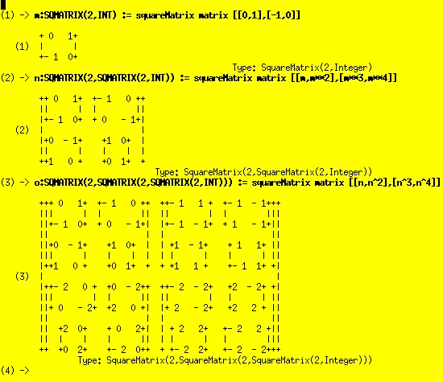
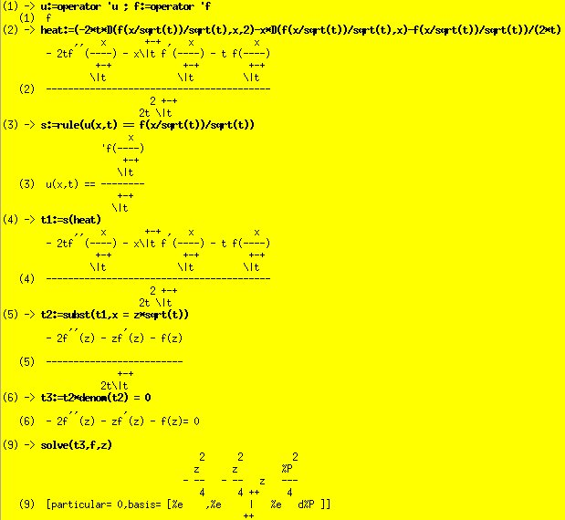

The Scientific Computation System
Some computations. An important thing: everything is
mathematically typed in Axiom.
(1) -> 1+1
(1) 2
Type: PositiveInteger
(2) -> integrate(1/x^(1/3),x)
3+-+2
3\|x
(2) ------
2
Type: Union(Expression Integer,...)
Axiom is capable of nesting a matrix within a matrix as can be seen from this screenshot:

Some more complicated computations:
)cl all
All user variables and function definitions have been cleared.
Word := OrderedFreeMonoid(Symbol)
(1) OrderedFreeMonoid Symbol
Type: Domain
poly:= XPR(Integer,Word)
(2) XPolynomialRing(Integer,OrderedFreeMonoid Symbol)
Type: Domain
p:poly := 2 * x - 3 * y + 1
(3) 1 + 2x - 3y
Type: XPolynomialRing(Integer,OrderedFreeMonoid Symbol)
q:poly := 2 * x + 1
(4) 1 + 2x
Type: XPolynomialRing(Integer,OrderedFreeMonoid Symbol)
p + q
(5) 2 + 4x - 3y
Type: XPolynomialRing(Integer,OrderedFreeMonoid Symbol)
p * q
2
(6) 1 + 4x - 3y + 4x - 6y x
Type: XPolynomialRing(Integer,OrderedFreeMonoid Symbol)
(p +q)^2 -p^2 -q^2 - 2*p*q
(7) - 6x y + 6y x
Type: XPolynomialRing(Integer,OrderedFreeMonoid Symbol)
M := SquareMatrix(2,Fraction Integer)
(8) SquareMatrix(2,Fraction Integer)
Type: Domain
poly1:= XPR(M,Word)
(9)
XPolynomialRing(SquareMatrix(2,Fraction Integer),OrderedFreeMonoid Symbol)
Type: Domain
m1:M := matrix [[i*j**2 for i in 1..2] for j in 1..2]
+1 2+
(10) | |
+4 8+
Type: SquareMatrix(2,Fraction Integer)
m2:M := m1 - 5/4
+ 1 +
|- - 2 |
| 4 |
(11) | |
| 27|
| 4 --|
+ 4+
Type: SquareMatrix(2,Fraction Integer)
m3: M := m2**2
+129 +
|--- 13 |
| 16 |
(12) | |
| 857|
|26 ---|
+ 16+
Type: SquareMatrix(2,Fraction Integer)
pm:poly1 := m1*x + m2*y + m3*z - 2/3
+ 2 + + 1 + +129 +
|- - 0 | |- - 2 | |--- 13 |
| 3 | +1 2+ | 4 | | 16 |
(13) | | + | |x + | |y + | |z
| 2| +4 8+ | 27| | 857|
| 0 - -| | 4 --| |26 ---|
+ 3+ + 4+ + 16+
Type: XPolynomialRing(SquareMatrix(2,Fraction Integer),OrderedFreeMonoid Symbol)
qm:poly1 := pm - m1*x
+ 2 + + 1 + +129 +
|- - 0 | |- - 2 | |--- 13 |
| 3 | | 4 | | 16 |
(14) | | + | |y + | |z
| 2| | 27| | 857|
| 0 - -| | 4 --| |26 ---|
+ 3+ + 4+ + 16+
Type: XPolynomialRing(SquareMatrix(2,Fraction Integer),OrderedFreeMonoid Symbol)
qm**3
(15)
+ 8 + + 1 8+ +43 52 + + 129 +
|- -- 0 | |- - -| |-- -- | |- --- - 26 |
| 27 | | 3 3| | 4 3 | | 8 | 2
| | + | |y + | |z + | |y
| 8| |16 | |104 857| | 857|
| 0 - --| |-- 9| |--- ---| |- 52 - ---|
+ 27+ + 3 + + 3 12+ + 8 +
+
+ 3199 831 + + 3199 831 + + 103169 6409 +
|- ---- - --- | |- ---- - --- | |- ------ - ---- |
| 32 4 | | 32 4 | | 128 4 | 2
| |y z + | |z y + | |z
| 831 26467| | 831 26467| | 6409 820977|
|- --- - -----| |- --- - -----| | - ---- - ------|
+ 2 32 + + 2 32 + + 2 128 +
+
+3199 831 + +103169 6409 + +103169 6409 +
|---- --- | |------ ---- | |------ ---- |
| 64 8 | 3 | 256 8 | 2 | 256 8 |
| |y + | |y z + | |y z y
|831 26467| | 6409 820977| | 6409 820977|
|--- -----| | ---- ------| | ---- ------|
+ 4 64 + + 4 256 + + 4 256 +
+
+3178239 795341 + +103169 6409 + +3178239 795341 +
|------- ------ | |------ ---- | |------- ------ |
| 1024 128 | 2 | 256 8 | 2 | 1024 128 |
| |y z + | |z y + | |z y z
|795341 25447787| | 6409 820977| |795341 25447787|
|------ --------| | ---- ------| |------ --------|
+ 64 1024 + + 4 256 + + 64 1024 +
+
+3178239 795341 + +98625409 12326223 +
|------- ------ | |-------- -------- |
| 1024 128 | 2 | 4096 256 | 3
| |z y + | |z
|795341 25447787| |12326223 788893897|
|------ --------| |-------- ---------|
+ 64 1024 + + 128 4096 +
Type: XPolynomialRing(SquareMatrix(2,Fraction Integer),OrderedFreeMonoid Symbol)
Axiom can do rule substitution to help simplify complex results as this screenshot shows:
Axiom has a new Firefox front end which will replace the Hyperdoc help system: